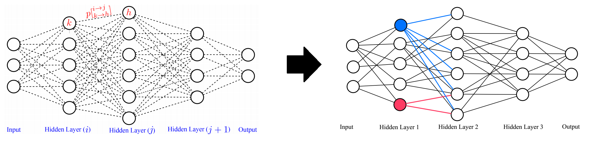

Deep neural networks is a branch in machine learning that has seen a meteoric rise in popularity due to its powerful abilities to represent and model high-level abstractions in highly complex data. One area in deep neural networks that is ripe for exploration is neural connectivity formation. A pivotal study on the brain tissue of rats found that synaptic formation for specific functional connectivity in neocortical neural microcircuits can be surprisingly well modeled and predicted as a random formation. Motivated by this intriguing finding, we introduce the concept of StochasticNet, where deep neural networks are formed via stochastic connectivity between neurons. As a result, any type of deep neural networks can be formed as a StochasticNet by allowing the neuron connectivity to be stochastic. Stochastic synaptic formations, in a deep neural network architecture, can allow for efficient utilization of neurons for performing specific tasks.
We are highly motivated by recent findings presented in the pivotal neuroscience paper by Hill et al, where they collected considerable data of living brain tissue from Wistar rats and used this data to recreate a partial map of a rat brain. After thorough analysis of the recreated brain map, Hill et al. came to a very surprising yet insightful conclusion with regards to the neural connectivity formation within the rat’s brain. What they found was that the synaptic formation, of specific functional connectivity in neocortical neural microcircuits, can be very well-modelled and predicted as a random formation.
we treat the formed deep neural networks as particular realizations of a random graph. Such stochastic synaptic formations in a deep neural network architecture can potentially allow for efficient utilization of neurons for performing specific tasks.
The neural connectivity for each randomly realized local receptive field in the deep convolutional network is based on a neural connectivity probability distribution, with the neural connectivity configuration then shared amongst different small neural collections for a given randomly realized local receptive field. Given this modified random graph model for representing deep convolutional neural networks, the resultant random graph realization is thus a deep convolutional neural network in which each convolutional layer consists of a set of randomly realized local receptive fields K, consisting of neural connection weights of a set of random neurons within a small neural collection to the output neuron.
StochasticNet is not a regularization technique, it is a sparse deep neural network. Existing regularization techniques do use random connectivity during training but they start with a dense network and end with a dense network.
To evaluate the feasibility of such a deep neural network architecture, we train a StochasticNet using four different image datasets (CIFAR-10, MNIST, SVHN, and STL-10). Experimental results show that a StochasticNet, using less than half the number of neural connections as a conventional deep neural network, achieves comparable accuracy and reduces overfitting on the CIFAR-10, MNIST and SVHN dataset. Interestingly, StochasticNet with less than half the number of neural connections, achieved a higher accuracy (relative improvement in test error rate of ~6 compared to ConvNet) on the STL-10 dataset than a conventional deep neural network. Finally, StochasticNets have faster operational speeds while achieving better or similar accuracy performances.